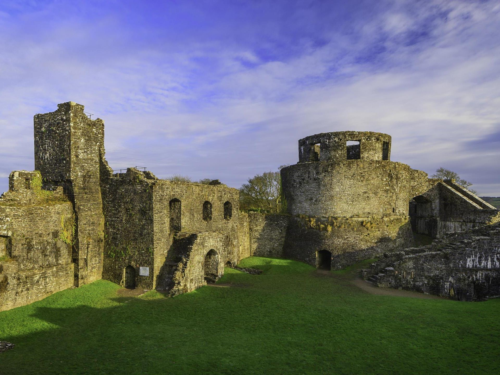

A glance up from beside the the meandering river Afon Tywi and the dramatic ruins of Dinefwr Castle puncture the skyline as if they have grown from the wooded ridge above.
Why not take in the castles of the western parts of the National Park and venture a little further to view this treasure? Built in the later 12th century by the lord, Rhys ap Gruffydd (Yr Arglwydd Rhys) ruler of the ancient south Wales kingdom of Deheubarth and thus it was the regional capital until the early part of the 15th century.
What there is to do ?
See the deep rock-hewn ditches which define two enclosures
See the high curtain wall and the great round tower built by Edward 1 when he remodelled the castle admire Edward 1st’s fine towered lodgings and smaller round tower
Enjoy the views from this one of the best vantage points in the whole of the Tywi Valley.